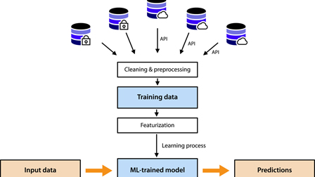

Predicting Air Quality after 2020
-
Our team wanted to find out if air quality improved significantly over the past two to four years. The current state of health that requires many people to stop interacting in close groups small and large is reported in the news with anecdotal information suggesting that there has been measurable improvement in air quality from 2019 to now.
-
Our team focused on datasets from the EPA air quality portal that reports raw monitoring sensor data on a daily basis. The EPA comes with an initial air quality index result for each pollutant monitored and the formula is published on the support site.
Air Data
-
Due to the very short time window, our team decided to focus on a regression model that could provide meaningful results to potentially noisy data. To get the benefit of some inline data normalization, we chose the Gaussian process regression [GPR] model that is available from scikit-learn.
GPR
-
By using GPR, the team had confidence that using the raw data reading as a single feature to input, would show measurable patterns that could predict trends. The prediction results can be plotted to fit ground truth observations to a line that can show a slope and a range of confidence.

The Team Approach
- APIs and data saved from APIs were used
- Cleaning and processing data required the raw data collected be filtered and collated into different ways of looking at the data
- Each city dataset was created to look at NO2, SO2, Ozone, CO and PM10 over 3 years, 10 years and a set going back to 2000
- Each City dataset was filtered to look at one pollutant over 3 years, 10 years and back to 2000
-
The following models were tested to see what would give the best results
-
SVM model with various feature selectiion
-
Random Forest Classification with various kernels
-
KNN with various kernels
-
Logistic Regression with different feature selections and different kernels
-
Gaussian Process Regression - using sciket Learn model set up for noise detection and smoothing in input data
-
